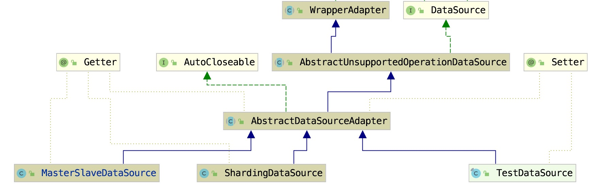

系统的数据和行为都正确，但接口不符时，我们应该考虑用适配器，目的是使控制范围之外的一个原有对象与某个接口匹配。适配器模式主要应用于希望复用一些现存的类，但是接口又与复用环境要求不一致的情况，将原来转换成你想要的
对现有的服务，通过适配模式可以实现对不同调用者提供相同行为上的不同表象
- 实现原服务接口
- 持有原服务
- 抽象可变行为
- 调用者依赖不同可变行为实现值
如图：

对原服务提供相同行为，不同表象
适配对象与基础服务提供相同行为（继承相同接口），通过封装原服务对 使用适配对象提供服务，在执行相同行为时候适配对象通过对（数据适配或者功能适配）返回
数据适配，功能适配，在原来接口上提供标准功能在此扩张，或者对基础数进行真强-满足调用者需求
适配需求-方法或者数据